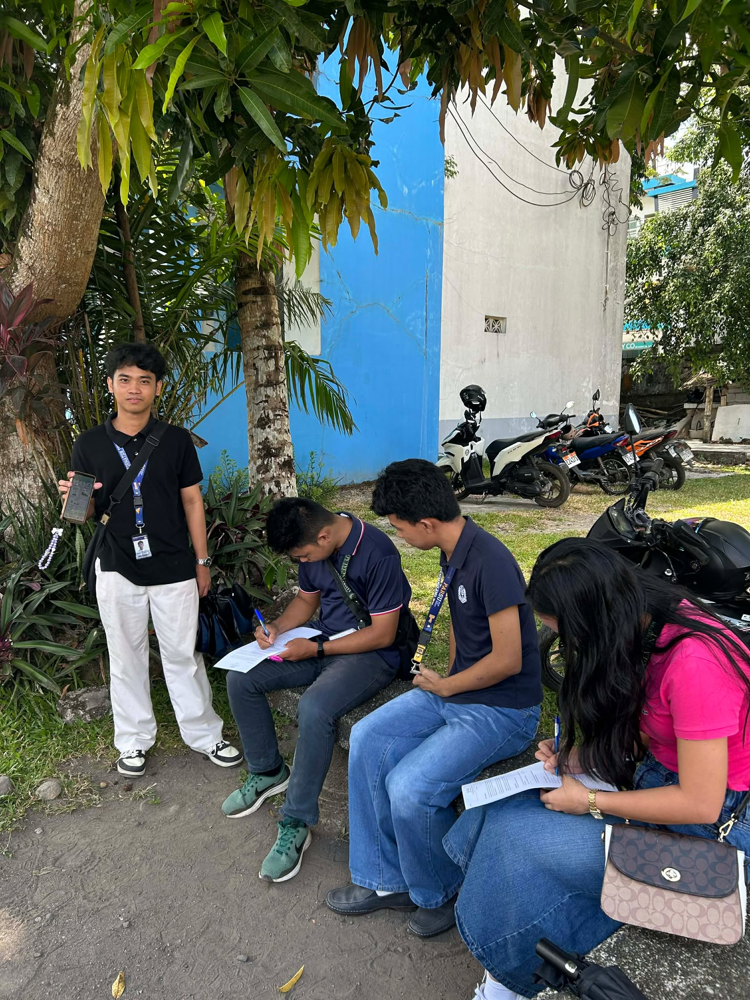
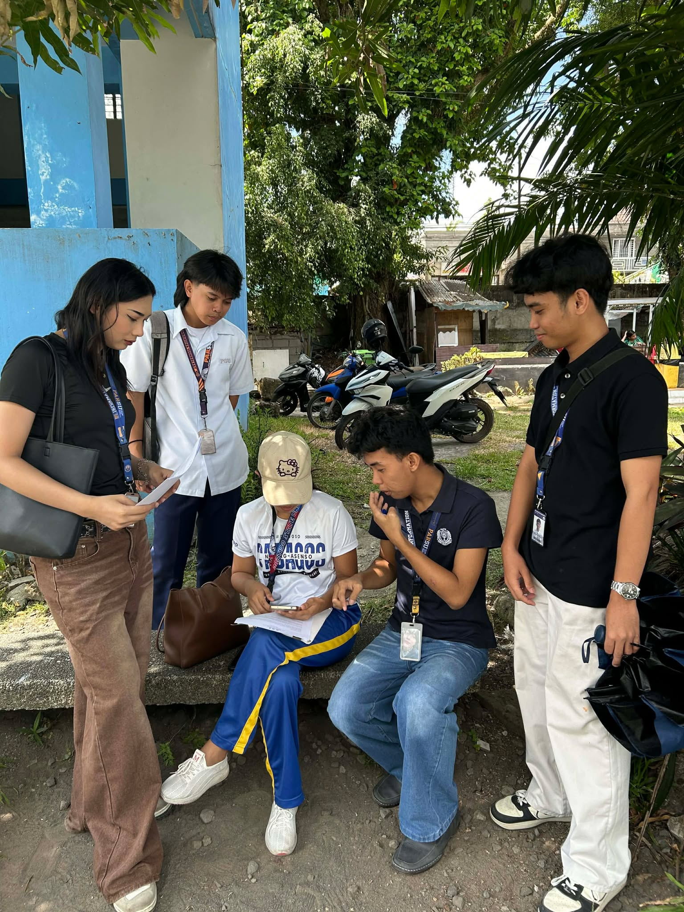
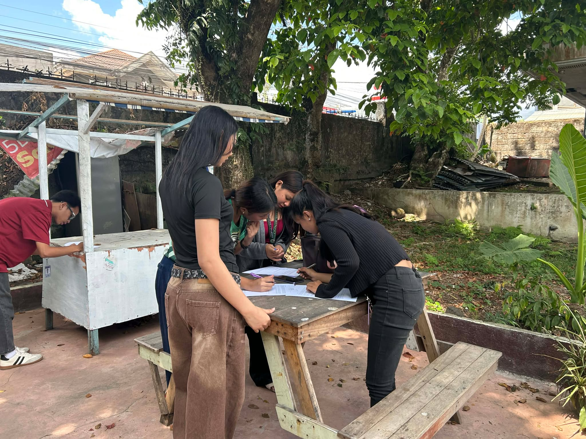
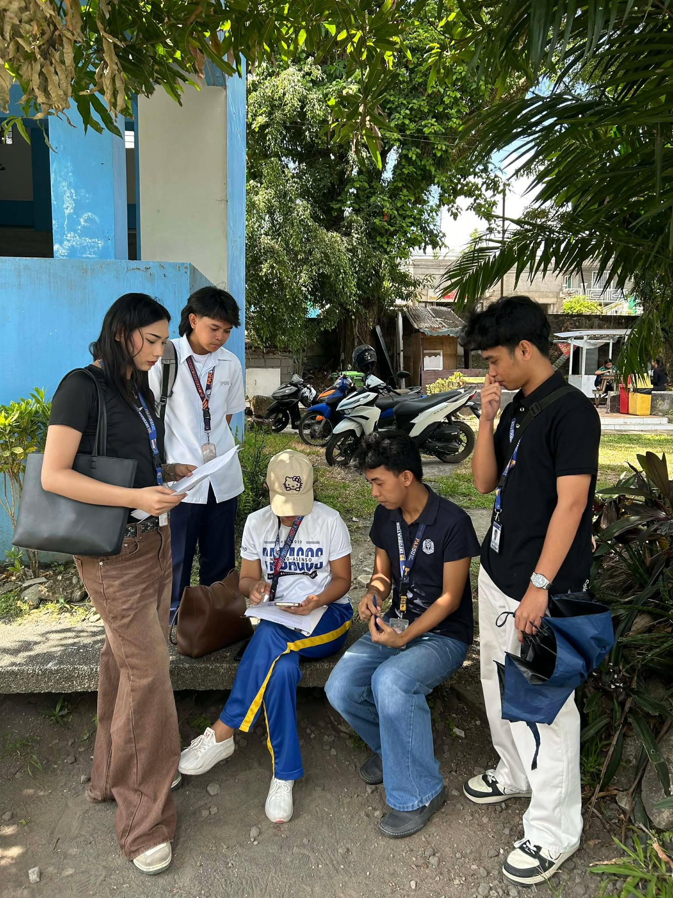
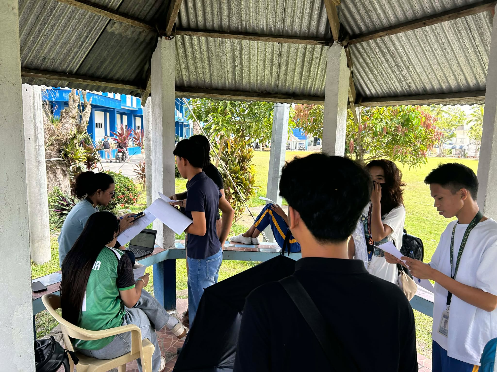

Respondent Profiles
| # | Respondent | Age | Program | Tech Proficiency |
|---|---|---|---|---|
| R1 | Respondent 1 | 20 | BSIT | High |
| R2 | Respondent 2 | 21 | BSIT | High |
| R3 | Respondent 3 | 19 | BSIT | Medium |
| R4 | Respondent 4 | 22 | BSIT | High |
| R5 | Respondent 5 | 20 | BSIT | Medium |
Each group member independently evaluated the prototype using Nielsen's 10 Usability Heuristics. Below is a consolidated summary of all findings.
Visibility of System Status Low Severity
System keeps users informed through appropriate feedback.
Match Between System and Real World Low Severity
Use words and concepts familiar to the user.
User Control and Freedom Medium Severity
Clearly marked emergency exits for mistaken actions.
Consistency and Standards Low Severity
Same words, situations, and actions mean the same thing.
Error Prevention Medium Severity
Careful design prevents problems from occurring.
Recognition Rather Than Recall Low Severity
Minimize memory load by making options visible.
Flexibility and Efficiency of Use Medium Severity
Accelerators for expert users.
Aesthetic and Minimalist Design Low Severity
No irrelevant or rarely needed information.
Help Users Recognize and Recover from Errors High Severity
Error messages in plain language that suggest solutions.
Help and Documentation High Severity
Help may be necessary even for well-designed systems.
Jodelyn – Screen 5: Mood Tracker & Diary
Focus: mood selection, diary entry, past entries, daily check-in flow.
Visibility of System Status Pass
Error Recovery Fail
Help & Documentation Fail
Julius – Screen 6: Home Dashboard
Focus: dashboard summary, quick stats, navigation, overall layout.
Consistency & Standards Pass
Flexibility of Use Partial
User Control & Freedom Fail
Celes – Screen 3: Daily Planner
Focus: to-do list, schedule, task management, planner layout.
Match with Real World Pass
Error Prevention Partial
Aesthetic Design Pass
Meljun – Screen 4: Habit Tracker
Focus: habit list, reminders, day selector, progress tracking.
System Status Visibility Pass
User Control & Freedom Partial
Help & Documentation Fail
Mark – Screen 7: Analytics
Focus: analytics charts, trend data, and data presentation.
Recognition over Recall Pass
Flexibility of Use Partial
Error Recovery Fail
Usability Testing Survey Instrument
Respondents interacted with the Figma prototype then answered these questions using a 5-point Likert scale (1 = Strongly Disagree, 5 = Strongly Agree).
The app was easy to navigate and understand.
Category: Learnability
The design is visually appealing and consistent.
Category: Aesthetics
I can clearly understand what each screen is for.
Category: Clarity
The app would help me manage my daily wellness routine.
Category: Utility
I encountered no confusing elements during testing.
Category: Error-Free Experience
I would recommend this app to others.
Category: Satisfaction

Testing Session 1
Respondents R1 & R2 conducting usability testing

Testing Session 2
Respondents R3 & R4 evaluating prototype tasks

Testing Session 3
Respondent R5 completing usability survey

Heuristic Evaluation
Group members performing expert evaluation

Prototype Demonstration
Figma walkthrough and user observation